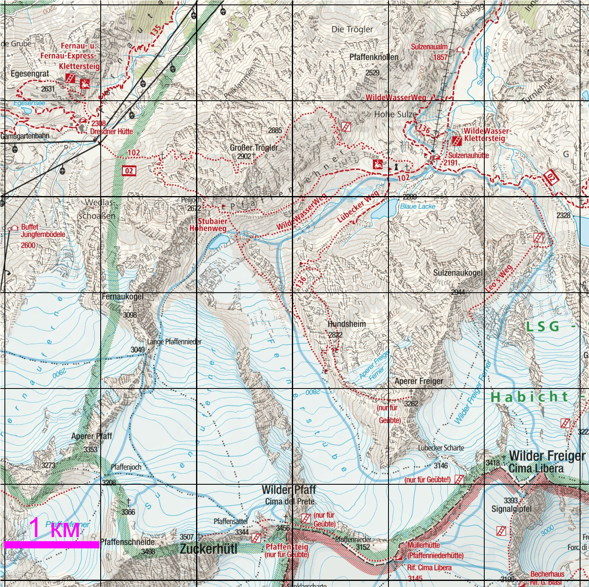
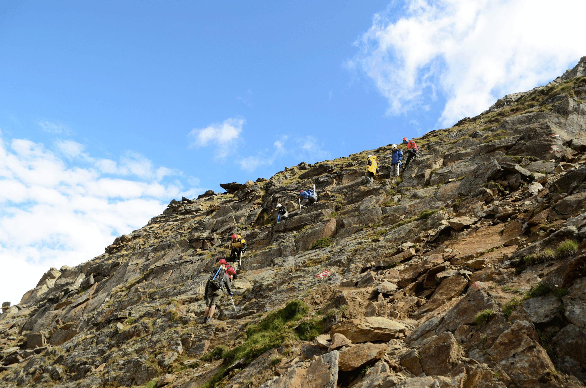

Вершина Großer Trögler
Großer Trögler (2902 м) – вершина в Штубайских Альпах (Южный Тироль, Австрия), расположенная на северном отроге вершины Aperer Pfaff, которая расположена на главном водоразделе (рис. 1). Западный склон вершины – скально-осыпной, крутизной до 45 градусов. Восточный склон - скала, высотой 300 м. На юге от вершины располагается перевал Beiljoch (Peiljoch). На север – гребень отрога. Вершина обозначена крестом, есть широкая площадка, на которой свободно могут разместиться десяток групп одновременно. Что на деле и происходит. С вершины открывается вид на долины Fernautal и Sulzenau, ледники Sulzenauferner, Fernerstube, видны вершины Wilder Pfaff и Zuckerhütl – высочайшие вершины района (рис. 2).

Рис. 1. Карта района издaтельства Kompass.

Рис. 2. Панорама, снятая с вер. Großer Trögler.
На вершину ведетут две тропы - одна с восточной стороны от хижины Sulzenauhutte, другая с западной от хижины (вернее сказать ″дом отдыха″) Dresdner Hütte. Großer Trögler – чрезвычайно популярное место у туристов. Ежедневно сотни путешественников из разных стран посещают эту вершину. Поскольку это прекрасная видовая точка, расположенная неподалеку от крупных населенных пунктов, а путь на нее не представляет особых трудностей и может быть пройден человеком с минимальной подготовкой. Группа поднялась на вершину с западной стороны. Тропа 102 от Dresdner Hütte раздваивается и уходит в одну сторону на перевал Beiljoch (Peiljoch), в другую на Großer Trögler. У подножья тропа проходит по травянистому склону, ближе к вершине – по скально-осыпному и скально-травянистому склонам крутизной до 40 град. На небольшом участке под вершиной провешена феррата (рис. 3). Прохождение этого участка не требует навыков скалолазания и специального скального снаряжения. Набор высоты от места развилки троп - 400 метров. Сложность тропы – ″черная″.
Другая тропа идет на вершину от Sulzenauhütte и проходит по гребню отрога. На карте на этой тропе обозначена феррата. Группа этим путем не ходила.

Рис. 3. Фотография ферраты тропе, ведущей к вершине с запада.
Перед подъемом группа заночевала у развилки троп. На подъем, спуск и фотографирование на вершине потребовалось около 4 часов.